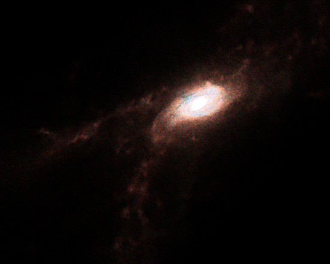
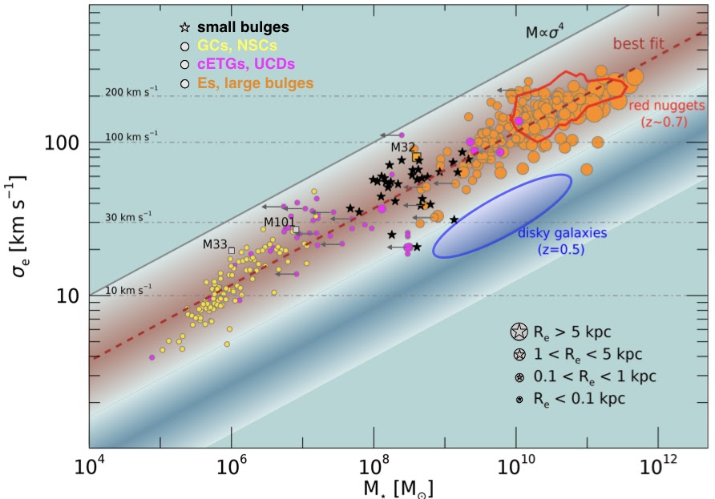

My investigation focuses on unveiling the assembly history of the different morphological components of galaxies: stellar bulges, disks, and bars.
In particular:
- I recently proposed that spheroids form in two waves, where first-wave bulges are relics of the early universe embedded in disk galaxies (Costantin et al. 2021, 2022).
- I investigated different diagnostics to classify bulges (and bars), proposing that the intrinsic shape describes their dynamical status (see Costantin et al. 2018a,b).
- I started a line of research that focuses on small bulges in late-type galaxies. These ''bulgeless'' galaxies are now investigated by the BEARD team (PI: J. Méndez Abreu; see Costantin et al. 2017; 2020).
- I focused on the stellar population properties of the core of massive early-type galaxies in the context of the WEAVE-StePS survey (Costantin et al. 2019).
Ωrigin of the Morphological Evolution of GAlaxies
Describe ΩMEGA.
Relics In Disk GalaxiES

Extracted from Costantin et al. (2021, 2022). In this work, I found that the majority of massive galaxies (~85%) build inside-out, growing their extended stellar disk around the central spheroid. The peak of the formation of bulges occurred at z=1.6, with a first population building half of their mass as early as 0.9 Gyr after the Big Bang (z=6.2) and a second wave peaking 3.8 Gyr later (z=1.3). In contrast, the disks in these galaxies typically formed at z=1. The results of this work allow extending to late-type galaxies the two-phase paradigm valid for early-type galaxies. Massive disk galaxies can host a compact core (first-wave bulge), which went through a blue and red-nugget phase and grew an extended stellar disk at later times.
Bulgeless Evolution And the Rise of Disks
Extracted from Costantin et al. (2020). In this work, I reported new observations of small bulges showing that they follow the mass-velocity dispersion relation expected for virialized systems. Contrary to previous claims, small bulges bridge the gap between massive elliptical galaxies and globular clusters. These results lead us to hypothesize that these small bulges are actually the low-mass descendants of compact objects observed at high redshift, also known as red nuggets, which are consistently produced in cosmological ΛCDM simulations. Therefore, this also suggests that the established coevolution of supermassive black holes and large bulges naturally extends to spheroids in the low-mass regime.
Stellar Populations at intermediate redshifts Survey
Extracted from Costantin et al. (2019). In this work, I tested StePS expected performances using realistic simulations at different redshifts and signal-to-noise ratios. I proposed that the difference between r-band and u-band light-weighted ages is a simple, robust, and meaningful physical parameter that can be used to trace the coexistence of widely diverse stellar components: younger stellar populations superimposed on the bulk of older ones. The main novelty is the use of ultraviolet indices together with more classic optical ones in the context of a full Bayesian analysis to infer simple but meaningful physical properties of past SFH of galaxies, the so-called archaeological approach.